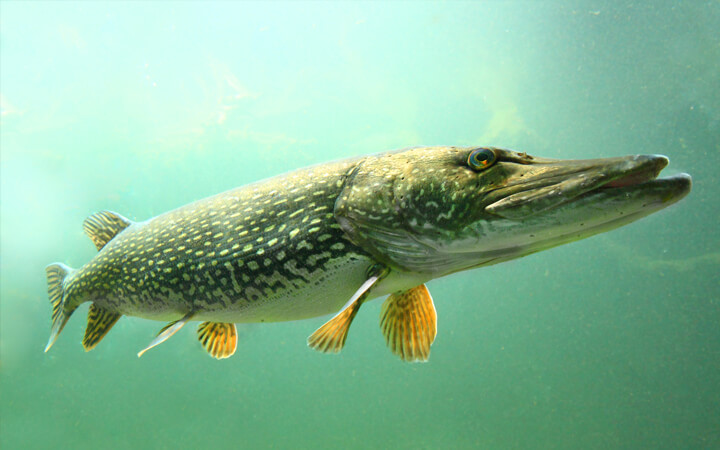

Pez de agua dulce muy resistente y adaptable.
Puede vivir en ríos, lagos y estanques.
Es omnívora: come plantas, insectos y pequeños animales.
Puede llegar a medir más de 1 metro y vivir muchos años.
